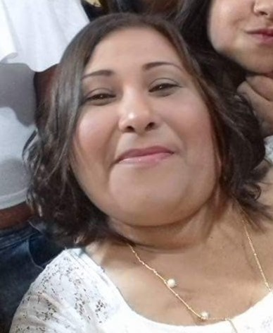
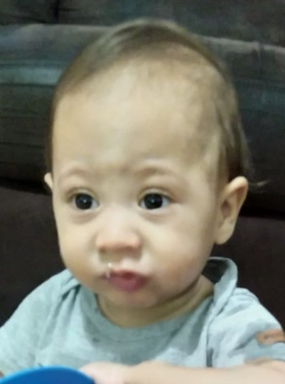

Ravi Sousa Silva
Cheguei dia: 22/11/2022
Horário: 20:30
Pesando: 2.155kg
Medindo: 45cm
Local: Hospital e maternidade salvalus
Parto: Normal
Nome da Mamãe: Ândrea
Nome do Papai: Igor
Como se conheceram: Estudaram juntos
Minha familia
Árvore genealogicaVovó
 MarinalvaVovô
 Sandro
Sandro
Vovó
DeniseVovô
MarceloMamãe
ÂndreaPapai
Igor

Ravi
Cancão Pequeno Ravi
| Mesversário | Peso | Altura |
|---|---|---|
| 1 Mês | 3,920g | 55cm |
| 2 Mês | 4,280g | 57cm |
| 3 Mês | 5,400g | 59cm |
| 4 Mês | 5,870g | 61cm |
| 5 Mês | 6,280g | 63cm |
| 6 Mês | 6,750g | 65cm |
| 7 Mês | 7,220g | 69cm |
| 8 Mês | 7,600g | 72cm |
| 9 Mês | 7,980g | 75cm |
| 10 Mês | 8,190g | 77cm |
| 11 Mês | 8,550g | 80cm |